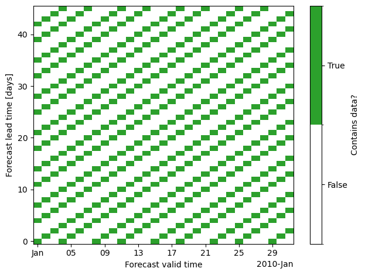
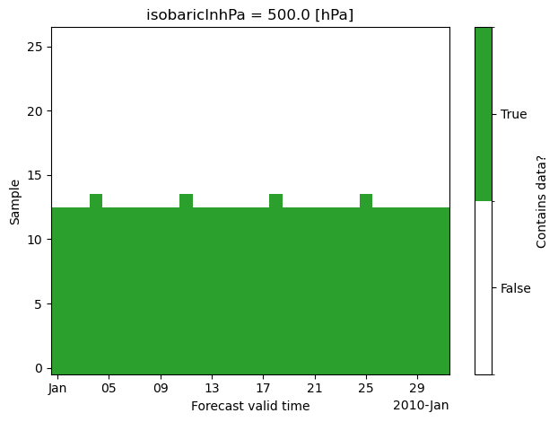

Constructing an unseen-awg weather generator
multiple ways to set up for reanalysis or reforecast datasets.
We implemented for ERA5 & [IFS reforecasts] neöpw
Using Snakemake to Configure Generation
We employ snakemake to automatically execute and schedule all required steps of the preprocessing. You can run snakemake in the terminal using
conda activate unseen-awg # activate conda environment
cd <project base directory> # navigate to unseen-awg base directory
snakemake --cores 1 --dry-run --configfile configs/weather_generators/<selected weather generator>.yaml # execute snakemake
With the --dry-run flag, snakemake performs a test without actually executing all required scripts, --configfile configs/weather_generators/<selected weather generator>.yaml appends the configuration of a weather generator to the task (this is necessary for the script to work).
By default, snakemake executes a test setup for the weather generator. It builds a weather generator, tunes it, and creates a combined dataset for the impact variables.
Adapt the Snakefile to produce different outputs and adapt the workflow to your task and system.
Preprocessing Details and Motivation
Reforecast Data
# load control and perturbed forecast and combine them:
cf = xr.open_dataset(path_single_cf).expand_dims("number")
pf = xr.open_dataset(path_single_pf)
xr.combine_by_coords([cf, pf], combine_attrs="drop_conflicts").drop_attrs()
<xarray.Dataset> Size: 8GB
Dimensions: (number: 11, time: 20, step: 185, latitude: 151,
longitude: 326)
Coordinates:
* number (number) int64 88B 0 1 2 3 4 5 6 7 8 9 10
* time (time) datetime64[ns] 160B 2003-06-29 ... 2022-06-29
* step (step) timedelta64[ns] 1kB 0 days 00:00:00 ... 46 days 00:...
* latitude (latitude) float64 1kB 80.0 79.6 79.2 78.8 ... 20.8 20.4 20.0
* longitude (longitude) float64 3kB -90.0 -89.6 -89.2 ... 39.2 39.6 40.0
isobaricInhPa float64 8B 500.0
valid_time (time, step) datetime64[ns] 30kB 2003-06-29 ... 2022-08-14
Data variables:
z (number, time, step, latitude, longitude) float32 8GB 5.43...ds_combined = xr.open_zarr(path_combined)
ds_combined.drop_attrs()
<xarray.Dataset> Size: 9GB
Dimensions: (ensemble_member: 11, init_time: 2560, lead_time: 46,
latitude: 18, longitude: 49)
Coordinates:
* ensemble_member (ensemble_member) int64 88B 0 1 2 3 4 5 6 7 8 9 10
* init_time (init_time) datetime64[ns] 20kB 2003-06-29 ... 2023-...
* lead_time (lead_time) timedelta64[ns] 368B 0 days ... 45 days
* latitude (latitude) float64 144B 30.0 32.5 35.0 ... 70.0 72.5
* longitude (longitude) float64 392B -80.0 -77.5 ... 37.5 40.0
isobaricInhPa float64 8B ...
Data variables:
geopotential_height (ensemble_member, init_time, lead_time, latitude, longitude) float64 9GB dask.array<chunksize=(10, 1, 46, 18, 49), meta=np.ndarray>What is relevant when computing similarities is the valid_time and whether the day of year of the valid time of two states are similar, therefore one would like to organize the dataset by valid_time, e.g. by using dimensions (valid_time, lead_time) instead of (init_time, lead_time). Like this computations could easily be vectorized.
However: forecasts aren’t started every single day. Therefore, there would be a lot of unregularly distributed empty spots in the resulting dataset, here’s an example for a range of dates:

Instead: use valid_time and introduce a new dimension “sample” which we populate with all forecasts for the same lead_time. Use a look-up table to extract lead_time / init_time from valid_time and sample
ds_restructured = xr.open_dataset(path_restructured)
ds_restructured.drop_attrs()
<xarray.Dataset> Size: 16GB
Dimensions: (valid_time: 7430, sample: 27, ensemble_member: 11,
lag: 1, latitude: 18, longitude: 49)
Coordinates:
* valid_time (valid_time) datetime64[ns] 59kB 2003-06-29 ... 2023...
* sample (sample) int64 216B 0 1 2 3 4 5 6 ... 21 22 23 24 25 26
* ensemble_member (ensemble_member) int64 88B 0 1 2 3 4 5 6 7 8 9 10
* lag (lag) timedelta64[ns] 8B 00:00:00
* latitude (latitude) float64 144B 30.0 32.5 35.0 ... 70.0 72.5
* longitude (longitude) float64 392B -80.0 -77.5 ... 37.5 40.0
isobaricInhPa float64 8B ...
Data variables:
geopotential_height (valid_time, sample, ensemble_member, lag, latitude, longitude) float64 16GB ...
init_time (valid_time, sample) datetime64[ns] 2MB ...Repeating the plot above with the new dataset and dimensions (valid_time, sample), we see that we can avoid a lot of data.
# Create a discrete colormap for binary data
cmap = mcolors.ListedColormap(["#ffffff", "#2ca02c"]) # Red=False, Green=True
bounds = [0, 0.5, 1]
norm = mcolors.BoundaryNorm(bounds, cmap.N)
fig, ax = plt.subplots()
im = (
(~np.isnat(ds_restructured.init_time.sel(valid_time=range_vt)))
.transpose()
.plot(
ax=ax,
cmap=cmap,
norm=norm,
add_colorbar=True,
cbar_kwargs={
"label": "Contains data?",
"ticks": [0.25, 0.75],
},
)
)
cbar = im.colorbar
cbar.ax.set_yticklabels(["False", "True"])
plt.xlabel("Forecast valid time")
plt.ylabel("Sample")
plt.tight_layout()
plt.show()

ds_combined.lead_time
<xarray.DataArray 'lead_time' (lead_time: 46)> Size: 368B
array([ 0, 86400000000000, 172800000000000, 259200000000000,
345600000000000, 432000000000000, 518400000000000, 604800000000000,
691200000000000, 777600000000000, 864000000000000, 950400000000000,
1036800000000000, 1123200000000000, 1209600000000000, 1296000000000000,
1382400000000000, 1468800000000000, 1555200000000000, 1641600000000000,
1728000000000000, 1814400000000000, 1900800000000000, 1987200000000000,
2073600000000000, 2160000000000000, 2246400000000000, 2332800000000000,
2419200000000000, 2505600000000000, 2592000000000000, 2678400000000000,
2764800000000000, 2851200000000000, 2937600000000000, 3024000000000000,
3110400000000000, 3196800000000000, 3283200000000000, 3369600000000000,
3456000000000000, 3542400000000000, 3628800000000000, 3715200000000000,
3801600000000000, 3888000000000000], dtype='timedelta64[ns]')
Coordinates:
* lead_time (lead_time) timedelta64[ns] 368B 0 days 1 days ... 45 days
isobaricInhPa float64 8B 500.0The size of the sample dimension is chosen as the maximum states with same valid_time. This is already smaller than the lead_time dimension:
print("Length lead_time dimension:", len(ds_combined.lead_time))
print("Length sample dimension:", len(ds_restructured.sample))
Length lead_time dimension: 46
Length sample dimension: 27
In our dataset, everything above sample == 13 contains almost exclusively missing data, so that for weather generators, we usually restrict the data to samples 0 to 13 by setting the n_samples: 14 in the corresponding configuration file.
Extra preprocessing step:
split valid_time dimension into year and dayofyear dimensions. What we care about is that calendar dates are similar, therefore working with dayofyear is useful
chunk along dayofyear dimension, so that only some of the chunks need to be loaded during the computation and memory is used efficiently.
xr.open_zarr(path_dayofyear_year)["geopotential_height"].drop_attrs()
<xarray.DataArray 'geopotential_height' (dayofyear: 366, year: 21, sample: 27,
ensemble_member: 11, lag: 1,
latitude: 18, longitude: 49)> Size: 16GB
dask.array<open_dataset-geopotential_height, shape=(366, 21, 27, 11, 1, 18, 49), dtype=float64, chunksize=(1, 21, 27, 11, 1, 18, 49), chunktype=numpy.ndarray>
Coordinates:
* dayofyear (dayofyear) int64 3kB 1 2 3 4 5 6 ... 362 363 364 365 366
* year (year) int64 168B 2003 2004 2005 2006 ... 2021 2022 2023
* sample (sample) int64 216B 0 1 2 3 4 5 6 ... 20 21 22 23 24 25 26
* ensemble_member (ensemble_member) int64 88B 0 1 2 3 4 5 6 7 8 9 10
* lag (lag) timedelta64[ns] 8B 00:00:00
* latitude (latitude) float64 144B 30.0 32.5 35.0 ... 67.5 70.0 72.5
* longitude (longitude) float64 392B -80.0 -77.5 -75.0 ... 37.5 40.0ERA5 Data
Implemented weather generator that works with daily aggregated ERA5 data
Stored as 1 file per year per variable in a separate directory for each variable
xr.open_dataarray(path_era5).drop_attrs()
<xarray.DataArray 't2m' (valid_time: 365, latitude: 721, longitude: 1440)> Size: 2GB
[378957600 values with dtype=float32]
Coordinates:
* valid_time (valid_time) datetime64[ns] 3kB 2010-01-01 ... 2010-12-31
* latitude (latitude) float64 6kB 90.0 89.75 89.5 ... -89.5 -89.75 -90.0
* longitude (longitude) float64 12kB 0.0 0.25 0.5 0.75 ... 359.2 359.5 359.8
number int64 8B ...Script
ds_from_era5.pyto convert this to the same “combined” zarr store format as the reforecasts:
# xr.open_zarr(path_era5_combined).drop_attrs()
Rest of processing follows what is done for reforecast data.